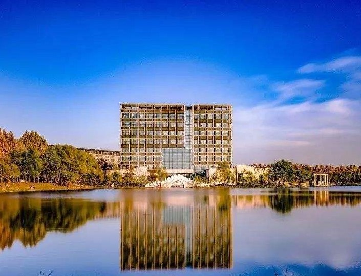

天一湖-图书馆
“枕上诗书闲处好，门前风景雨来佳”

图书馆坐落在学校中轴线西侧，美丽的天一湖畔，建筑面积3.04万平方米，由我国著名建筑学家、中国工程院院士、清华大学教授关肇邺先生亲自主持设计。图书馆主楼为地上8层，地下一层，集功能性、实用性和环保性于一身。地下一层为图书馆密集书库等；一层由河南中医药博物馆，学术报告厅等组成；二至七层为读者开架借阅区，设有标准阅览坐席2700余个；八层为图书馆办公及研究用房。
河南中医药大学图书馆前身是河南省中医进修学校图书室，始建于1954年。1958年，随学校由开封迁入郑州市并更名为河南中医学院图书室。1988年，东明校区图书馆建成使用。2006年，龙子湖校区图书馆临时馆舍启用，与东明校区图书馆同时对读者开放。2015年6月，图书馆新馆在龙子湖校区建成，将原各馆整合统一后开馆。2016年3月，随学校更名为河南中医药大学图书馆
图书馆作为全校的文献信息中心，是为学校教学、科研与医疗提供文献信息服务，并负责全校读者信息教育的学术性机构。在学校党、政领导的支持下，经过全馆工作人员的共同努力，办馆条件不断完善，办馆水平不断提高，在履行信息职能，为教学科研服务方面发挥着积极作用。图书馆被河南省人民政府批准授予“河南省古籍重点保护单位”，并于2014年经河南省科技厅批准建立“河南省科技查新工作站”。
始终坚持“以人为本”的办馆宗旨<
为学校教学、科研提供便捷、优质的文献信息服务。